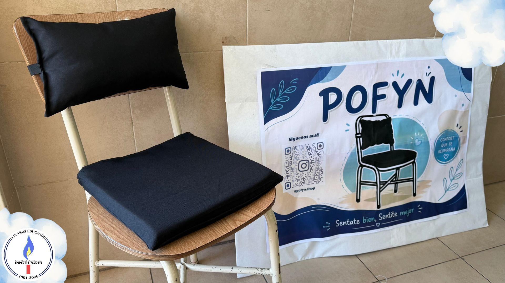
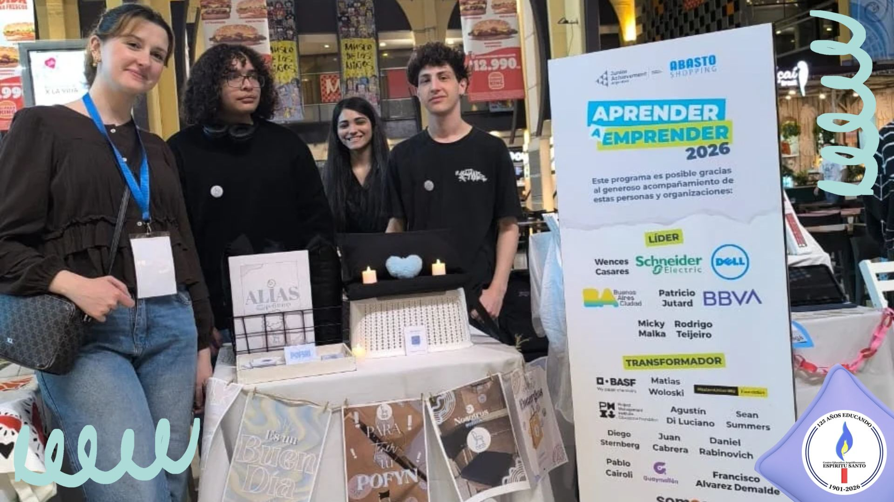
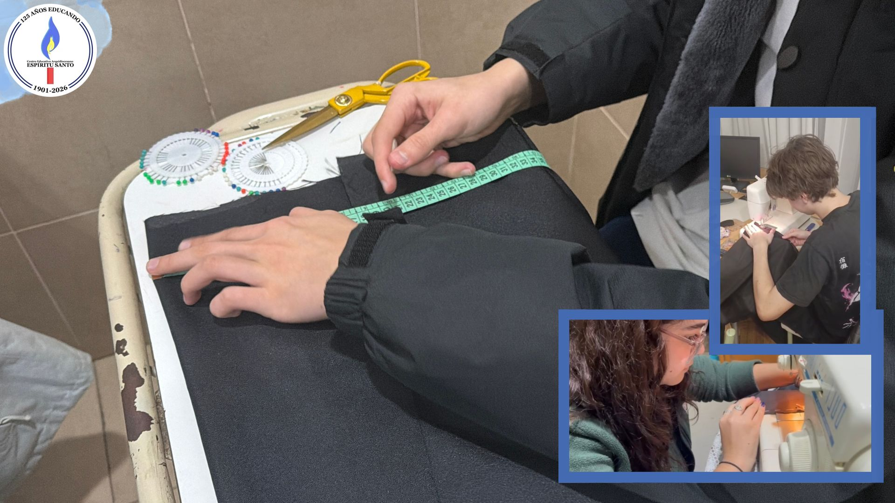

Emprendimiento de 5to B con Junior Archievement: "POFYN"
Por Catalina Adimari

Nuestro emprendimiento lleva el nombre de “Pofyn”, el cual surgió luego de poner en común varias opciones más, tales como “Puffy” o “Pufyn”. En Pofyn ofrecemos un kit de almohadones confortantes pensados para usar en sillas o lugares no tan cómodos, ofreciendo una mayor comodidad y bienestar a la hora de trabajar, estudiar, etc. Pofyn comenzó como un proyecto que brindaba, además de una nueva experiencia para el grupo, bastante incertidumbre, ya que era la primera vez que se realizaba el programa “Aprender a Emprender” en el CEAES.

Pero junto con nuestras profesoras Myriam Marecos y Griselda Orellano, la buena disposición de todos, la buena organización y las capacidades de los líderes de cada área para dirigir y potenciar los talentos de cada uno, se llevó a cabo un emprendimiento exitoso: se vendieron muchísimas más unidades de las que teníamos planeadas, las finanzas se llevaron al día en todo momento y, sobre todo, pudimos experimentar en escala más pequeña cómo es trabajar en una empresa. Nuestro emprendimiento alcanzó un total de 39 unidades vendidas entre promociones y sorteos, logrando una rentabilidad del 162%. Las acciones aumentaron su valor inicial de $3083 a $8094, logrando gran ganancia

Leer otras notas
Papa León XIV en Argentina: Vigilia con los jóvenes en Buenos Aires
Editorial por Rector Lic. Ricardo Barboza
Publicidad